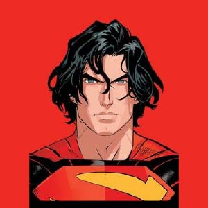
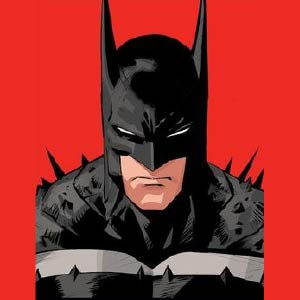
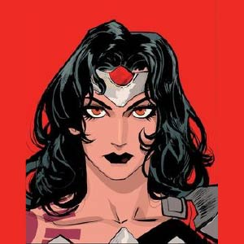

Esta versión de Superman se aleja del arquetipo tradicional: Kal-El llega a la Tierra como un adolescente, no como un bebé, y crece en un mundo hostil dominado por corporaciones corruptas. Sin la Fortaleza de la Soledad, sin una familia estable y sin un hogar, se convierte en un campeón solitario de los oprimidos, enfrentándose a la poderosa Corporación Lazarus y sus fuerzas de seguridad, los Pacificadores.

En esta versión, Bruce Wayne es un ingeniero civil de 24 años de clase obrera que combate el crimen como Batman usando equipo y armaduras de su propia creación. Tras presenciar el asesinato de su padre en un tiroteo masivo, se obsesiona con erradicar la violencia en Gotham. Mientras tanto, Alfred Pennyworth, un agente del MI6, llega a la ciudad para investigar a la organización terrorista Party Animals, liderada por Roman Sionis (Máscara Negra).

En esta versión, Diana no crece en la idílica Isla Paraíso, sino que es entregada al nacer a Circe, quien la cría en el infierno. Criada entre criaturas demoníacas, Diana se convierte en una guerrera implacable, más salvaje y mística que su contraparte tradicional. No tiene amazonas ni isla, lo que la convierte en una figura solitaria y letal.